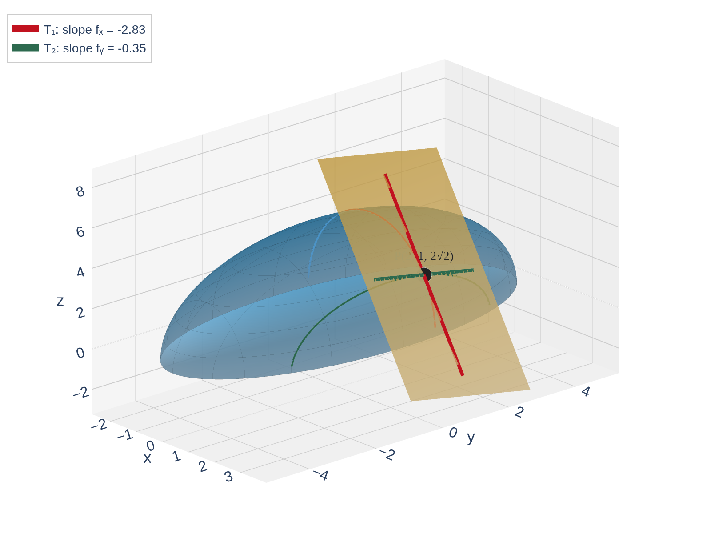

Tangent Planes and Linearization
MTH 310 — Calculus III
Partial Derivatives
We'll need the partial derivatives of the hemi-ellipsoid
\[f(x,y) = \sqrt{25 - 4x^2 - y^2} = (25 - 4x^2 - y^2)^{1/2}\]
Compute the partial derivatives \(f_x\) and \(f_y\), then evaluate each at \((2, 1)\).
Hint: Rewrite as a \(\frac{1}{2}\)-power so you can use the chain rule.
Finding \(f_x\): Hold \(y\) constant, chain rule on the \(\frac{1}{2}\)-power:
\[f_x = \tfrac{1}{2}(25 - 4x^2 - y^2)^{-1/2} \cdot (-8x) = \frac{-4x}{\sqrt{25 - 4x^2 - y^2}}\]
Finding \(f_y\): Hold \(x\) constant, same chain rule pattern:
\[f_y = \tfrac{1}{2}(25 - 4x^2 - y^2)^{-1/2} \cdot (-2y) = \frac{-y}{\sqrt{25 - 4x^2 - y^2}}\]
Evaluate at \((2, 1)\): The denominator is \(\sqrt{25 - 16 - 1} = \sqrt{8} = 2\sqrt{2}\)
\[f_x(2,1) = \frac{-8}{2\sqrt{2}} = -2\sqrt{2} \approx -2.83 \qquad f_y(2,1) = \frac{-1}{2\sqrt{2}} = -\frac{\sqrt{2}}{4} \approx -0.35\]
The chain rule is the key skill here — every square root, exponential, or composition in \(f\) will need it for partial derivatives.
Recall from Calc I: If \(f(x)\) is differentiable, then when you zoom in near a point the graph looks like a straight line — the tangent line.
The tangent line at \(x_0\) is the best linear approximation:
\[y - y_0 = f'(x_0)(x - x_0)\]
Now in Calc III: For a function of two variables \(z = f(x, y)\), zooming in near a point makes the surface look like a flat plane — the tangent plane.
The tangent plane is the best linear approximation to the surface near that point.

Calc I: zoom in \(\rightarrow\) tangent line. Calc III: zoom in \(\rightarrow\) tangent plane.
In Calc I we needed one slope \(f'(x_0)\). Now we have two independent directions to tilt — one for \(x\) and one for \(y\) — so we need both partial derivatives.
If \(f\) is differentiable at \((x_0, y_0)\), the tangent plane to \(z = f(x, y)\) at the point \((x_0, y_0, z_0)\) is:
\[z - z_0 = f_x(x_0, y_0)(x - x_0) + f_y(x_0, y_0)(y - y_0)\]
where \(z_0 = f(x_0, y_0)\).
| Calc I (Tangent Line) | Calc III (Tangent Plane) | |
|---|---|---|
| Function | \(y = f(x)\) | \(z = f(x, y)\) |
| Slopes needed | \(f'(x_0)\) | \(f_x(x_0, y_0)\) and \(f_y(x_0, y_0)\) |
| Equation | \(y - y_0 = f'(x_0)(x - x_0)\) | \(z - z_0 = f_x(x_0, y_0)(x - x_0) + f_y(x_0, y_0)(y - y_0)\) |
Same structure as the tangent line equation, but with two slope terms instead of one.
Common mistake: Students write the tangent plane formula but forget to evaluate everything at the point. The function value \(f(x_0, y_0)\) and the partial derivatives \(f_x(x_0, y_0)\), \(f_y(x_0, y_0)\) must all be computed as numbers. Your final answer should be the equation of a line (Calc I) or a plane (Calc III) — no derivatives or function values left!
Warning: For the tangent plane to exist, we need the function to be differentiable. In Calc I, if \(f'(x_0)\) exists, then \(f\) is differentiable at \(x_0\). For two variables, it is not enough for the partial derivatives to merely exist at the point.
If the partial derivatives \(f_x\) and \(f_y\) are continuous on an open region containing \((x_0, y_0)\), then \(f\) is differentiable at \((x_0, y_0)\).
In other words: continuous partials \(\Rightarrow\) differentiable \(\Rightarrow\) tangent plane exists.
Why is "partials exist" not enough?
A function can have partial derivatives at a point yet still have a sharp crease or corner there. Continuous partials near the point guarantee the surface is truly smooth.
Rule of thumb: If \(f_x\) and \(f_y\) are built from standard functions (polynomials, trig, exponentials, etc.) and the point is in the domain, you're safe.
Does the hemi-ellipsoid \(f(x,y) = \sqrt{25 - 4x^2 - y^2}\) have a tangent plane at \((2, 1)\)? Why?
From the warm-up, the partial derivatives are:
\[f_x(x,y) = \frac{-4x}{\sqrt{25 - 4x^2 - y^2}}, \qquad f_y(x,y) = \frac{-y}{\sqrt{25 - 4x^2 - y^2}}\]
These are built from standard functions (quotients of polynomials and square roots) and are continuous wherever the denominator \(\sqrt{25 - 4x^2 - y^2} \neq 0\) — that is, everywhere in the interior of the domain.
At \((2, 1)\): \(\;\sqrt{25 - 16 - 1} = 2\sqrt{2} \neq 0\), so \((2,1)\) is an interior point.
Yes — \(f_x\) and \(f_y\) are continuous near \((2, 1)\), so \(f\) is differentiable there and the tangent plane exists.
Find the equation of the tangent plane to the surface
\[z = f(x,y) = \sqrt{25 - 4x^2 - y^2}\]
at the point \((2, 1)\).
Find \(f(2,1), f_x(2,1), f_y(2,1)\), and use: \(z - z_0 = f_x(x_0, y_0)(x - x_0) + f_y(x_0, y_0)(y - y_0)\)
Step 1 — Gather the ingredients: From the warm-up,
\[z_0 = f(2,1) = 2\sqrt{2}, \qquad f_x(2,1) = -2\sqrt{2}, \qquad f_y(2,1) = -\frac{\sqrt{2}}{4}\]
Step 2 — Write the tangent plane formula:
\[z - z_0 = f_x(x_0, y_0)(x - x_0) + f_y(x_0, y_0)(y - y_0)\]
Step 3 — Substitute:
\[z - 2\sqrt{2} = -2\sqrt{2}(x - 2) - \frac{\sqrt{2}}{4}(y - 1)\]
The tangent plane tilts steeply in the \(x\)-direction (slope \(-2\sqrt{2} \approx -2.83\)) but gently in \(y\) (slope \(-\sqrt{2}/4 \approx -0.35\)).
Find the equation of the tangent plane to
\[z = x^2 + y^2\]
at the point \((1, 2, 5)\).
Compute f_x and f_y, evaluate at (1, 2), and plug into the formula.
Gather the ingredients:
\(f(1,2) = 5, \quad f_x = 2x \;\Rightarrow\; f_x(1,2) = 2, \quad f_y = 2y \;\Rightarrow\; f_y(1,2) = 4\)
Write the formula:
\[z - z_0 = f_x(x_0, y_0)(x - x_0) + f_y(x_0, y_0)(y - y_0)\]
Substitute:
\[z - 5 = 2(x - 1) + 4(y - 2)\]
Simplify:
\(z - 5 = 2x - 2 + 4y - 8 \;\;\Rightarrow\;\; z = 2x + 4y - 5\)
Quick check: Does \((1, 2, 5)\) satisfy this? \(2(1) + 4(2) - 5 = 5\) \(\checkmark\)
Once we have the tangent plane, we can use it to estimate the value of \(f\) at nearby points — exactly as we used the tangent line in Calc I.
The linearization (or linear approximation) of \(f\) at \((a, b)\) is:
\[L(x, y) = f(a, b) + f_x(a, b)(x - a) + f_y(a, b)(y - b)\]
For \((x, y)\) near \((a, b)\): \(f(x, y) \approx L(x, y)\).
Notice: \(L(x, y)\) is just the tangent plane equation solved for \(z\). The tangent plane is the linear approximation.
The tangent plane gives us a simple formula to approximate a complicated function near a known point.
Using the tangent plane from Example 2, approximate the value of
\[f(2.05,\, 0.92) = \sqrt{25 - 4(2.05)^2 - (0.92)^2}\]
Use L(x,y) = f(2,1) + f_x(2,1)(x-2) + f_y(2,1)(y-1) with x = 2.05, y = 0.92.
Write the linearization formula:
\[L(x, y) = f(a, b) + f_x(a, b)(x - a) + f_y(a, b)(y - b)\]
From Example 2: \(f(2,1) = 2\sqrt{2}\), \(f_x(2,1) = -2\sqrt{2}\), \(f_y(2,1) = -\frac{\sqrt{2}}{4}\)
Substitute:
\[L(2.05,\, 0.92) = 2\sqrt{2} + (-2\sqrt{2})(2.05 - 2) + \left(-\frac{\sqrt{2}}{4}\right)(0.92 - 1)\]
Simplify:
\[= 2\sqrt{2} + (-2\sqrt{2})(0.05) + \left(-\frac{\sqrt{2}}{4}\right)(-0.08)\]
\[= 2\sqrt{2} - 0.1\sqrt{2} + 0.02\sqrt{2} = 1.92\sqrt{2} \approx 2.7153\]
Calculator check: \(f(2.05, 0.92) = \sqrt{25 - 16.81 - 0.8464} \approx 2.7109\)
Error \(\approx 0.004\) — very close!
For small changes in \(x\) and \(y\), the tangent plane gives an excellent estimate without needing a calculator.
There is an equivalent way to think about linear approximation using differentials — the same idea from Calc I, extended to two variables.
If \(z = f(x, y)\) and \(f\) is differentiable, the total differential is:
\[dz = f_x(x, y)\, dx + f_y(x, y)\, dy\]
where \(dx = \Delta x\) and \(dy = \Delta y\) are the changes in \(x\) and \(y\).
Connection to linear approximation:
| Calc I | Calc III | |
|---|---|---|
| Differential | \(dy = f'(x)\, dx\) | \(dz = f_x\, dx + f_y\, dy\) |
| Meaning | Change in \(y\) along tangent line | Change in \(z\) along tangent plane |
| Approximation | \(\Delta y \approx dy\) | \(\Delta z \approx dz\) |
Differentials give you the change in the output. Linear approximation gives you the new value. They're two sides of the same coin: \(L = f + dz\).
Use differentials to approximate \(f(2.05, 0.92)\) where \(f(x,y) = \sqrt{25 - 4x^2 - y^2}\).
(Same problem as Example 4 — different method.)
Set dx = 0.05, dy = -0.08. Compute dz = f_x dx + f_y dy. Then f(2.05, 0.92) ≈ f(2,1) + dz.
Write the general differential:
\[dz = f_x(x, y)\, dx + f_y(x, y)\, dy\]
For \(f(x,y) = \sqrt{25 - 4x^2 - y^2}\):
\[dz = \frac{-4x}{\sqrt{25 - 4x^2 - y^2}}\, dx + \frac{-y}{\sqrt{25 - 4x^2 - y^2}}\, dy\]
Identify the changes: \(dx = 2.05 - 2 = 0.05\), \(\;dy = 0.92 - 1 = -0.08\)
Substitute at \((2, 1)\):
\[dz = (-2\sqrt{2})(0.05) + \left(-\frac{\sqrt{2}}{4}\right)(-0.08) = -0.1\sqrt{2} + 0.02\sqrt{2} = -0.08\sqrt{2}\]
Approximation: \(f(2.05,\, 0.92) \approx f(2,1) + dz\)
\[= 2\sqrt{2} + (-0.08\sqrt{2}) = 1.92\sqrt{2} \approx 2.7153\]
Same answer as Example 4 — because it's the same idea!
Linear approximation says "plug in." Differentials say "find the change." Both give the same result.
The volume of a right circular cone is \(V = \frac{1}{3}\pi r^2 h\).
If the radius is measured as \(r = 5\) cm and the height as \(h = 12\) cm, each with a possible error of \(\pm 0.1\) cm, use differentials to estimate the maximum error in the calculated volume.
Find dV = V_r dr + V_h dh. Use |dr| = |dh| = 0.1 to get the maximum |dV|.
Write the general differential:
\[dV = V_r\, dr + V_h\, dh = \frac{2}{3}\pi r h\, dr + \frac{1}{3}\pi r^2\, dh\]
Substitute \(r = 5\), \(h = 12\), \(|dr| = |dh| = 0.1\):
\[|dV| \leq \frac{2}{3}\pi(5)(12)(0.1) + \frac{1}{3}\pi(25)(0.1) = 4\pi + \frac{2.5\pi}{3} = \frac{14.5\pi}{3} \approx 15.18 \text{ cm}^3\]
\(z - z_0 = f_x(x_0, y_0)(x - x_0) + f_y(x_0, y_0)(y - y_0)\)
Continuous partial derivatives near the point \(\Rightarrow\) differentiable \(\Rightarrow\) tangent plane exists
\(f(x,y) \approx L(x,y) = f(a,b) + f_x(a,b)(x-a) + f_y(a,b)(y-b)\)
\(dz = f_x\, dx + f_y\, dy \approx \Delta z\) for small changes
Use \(|dz|\) to bound how measurement errors propagate through a formula
Big idea: The tangent plane is the 3D version of the tangent line — the best linear approximation to a surface near a point.
3, 9, 11, 21, 25, 27, 29, 33, 39, 43, 52